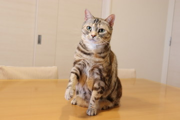
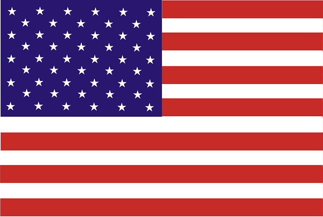
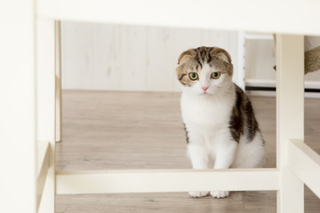
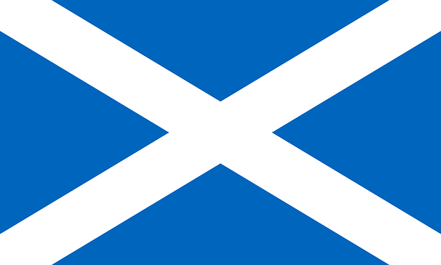
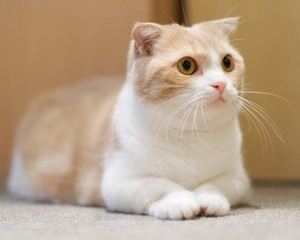
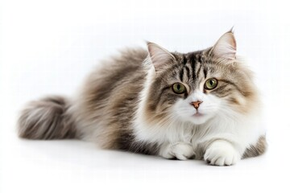
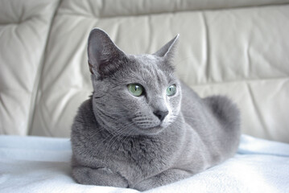

Hinsyu
-

- アメリカンショートヘアー
- 性格: 温厚で物怖じせず，他の猫や環境への順応性も高い
- 体重: 3 ~ 6 kg
- 特徴: 体や顔に渦巻き模様（タビー）
原産国: アメリカ 
-

- スコティッシュフォールド
- 性格: とても穏やかだが甘えん坊な一面もある
- 体重: 2.7 ~ 4.7 kg
- 特徴: 前向きに折れ曲がった小さい耳と丸みを帯びた体系
原産国: スコットランド 
-

- マンチカン
- 性格: 活発で社交的なタイプが多く，飼い主に対してすぐすり寄る，甘えん坊な一面もある
- 体重: ~ 4.5 kg
- 特徴: 短い足と丸みのあるくさび形の顔
原産国: アメリカ
-

- ラガマフィン
- 性格: 穏やかで優しく，「猫のテディベア」と呼ばれる
- 体重: 4.5 ~ 9 kg
- 特徴: 大きなぬいぐるみのような愛らしさがある
原産国: アメリカ
-

- ロシアンブルー
- 性格: 頭がよく，飼い主に忠実でなつきやすい
- 体重: 2.8 ~ 4.7 kg
- 特徴: 大きな丸いエメラルドグリーンの瞳
原産国: ロシア